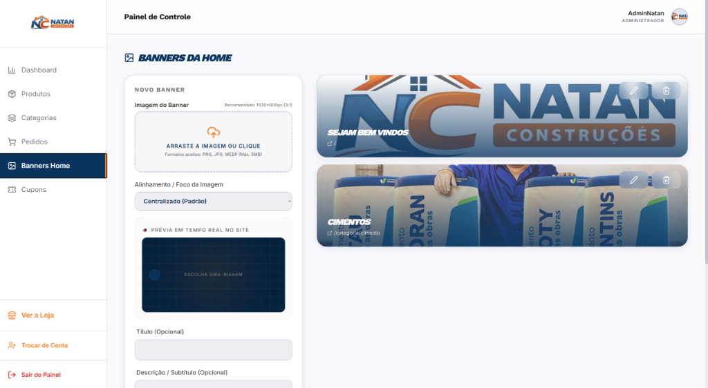
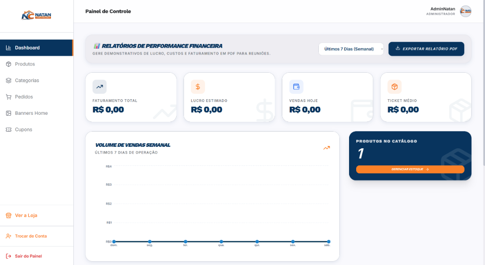
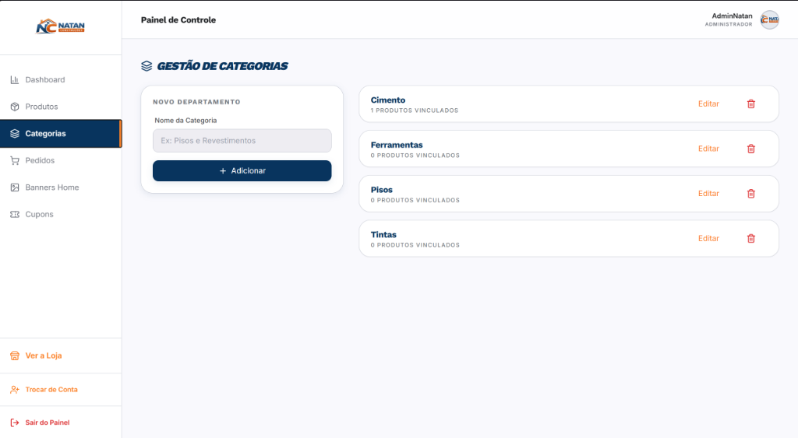
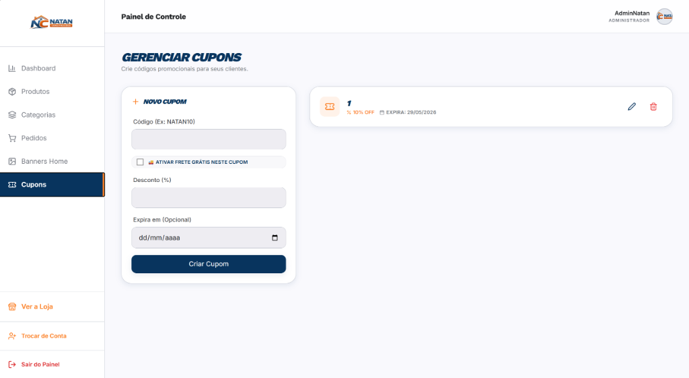

Manual do Ecossistema Natan Construções
Este é o documento oficial que mapea todo o funcionamento do ecossistema inteligente que desenvolvi para a Natan Construções, cobrindo o painel administrativo avançado e as regras de negócio de ponta a ponta.
info 1. Introdução ao Ecossistema
O sistema da Natan Construções é uma plataforma moderna de e-commerce e catálogo digital blindada com validação de estoque em tempo real, fechamento de pedidos automatizado via WhatsApp e um painel administrativo completo com controle financeiro avançado. Desenvolvido para oferecer máxima performance, flexibilidade de banners e gestão eficiente.
dashboard 2. Dashboard Geral (Painel de Vendas)
O Painel de Controle inicial oferece ao administrador métricas financeiras atualizadas em tempo real sobre a saúde comercial do estúdio.
- Métricas Cruciais: Faturamento total acumulado, contagem de vendas no dia e ticket médio.
- Relatório PDF Exclusivo: Geração de demonstrativos de lucro, custos e faturamento exportáveis para reuniões corporativas.
- Monitor de Volume Semanal: Gráfico dinâmico mapeando a performance operacional.

Interface administrativa do Painel de Controle Financeiro.
shopping_bag 3. Gestão de Produtos (Cadastro e Estoque)
Controle integral dos materiais disponíveis no estoque com validações nativas contra erros de digitação e travamento operacional automático.
- Cadastro Técnico Completo: Definição de nome, categoria, preço base de venda, preço de custo interno, desconto promocional e peso físico.
- Galeria Drag & Drop: Upload facilitado arrastando imagens diretamente para a área dropzone.
- Garantia de Sincronia: O sistema impossibilita que o cliente final adquira um volume maior de itens do que o disponível no estoque físico catalogado.

Formulário avançado de cadastro técnico de materiais.
category 4. Gestão de Categorias e Departamentos
Estruturação e organização modular de departamentos de produtos para otimizar a experiência de navegação do usuário final.
- Departamentos Dinâmicos: Criação, edição e exclusão de categorias principais (ex: Cimento, Ferramentas, Pisos, Tintas).
- Contador de Itens Vinculados: Informação visual direta sobre quantos produtos estão atribuídos a cada departamento antes de realizar alterações.

Painel de gerenciamento e vinculação de departamentos.
receipt_long 5. Monitor de Pedidos e Disparos WhatsApp
Central de triagem de compras que automatiza toda a comunicação comercial com os clientes finais enviando notificações de status integradas.
- Filtragem por Status: Triagem rápida de itens processando, pagos, despachados ou entregues.
- Disparos Automáticos de Status: O sistema gera mensagens limpas e compatíveis prontas para envio automático no WhatsApp do cliente com o status atualizado do pedido.
- Logística e Notas: Atalhos de visualização de endereço detalhado e emissão de notas fiscais em PDF.

Mapeamento e acompanhamento de status de vendas.
view_carousel 6. Gestão de Banners (Alinhamento e Live Mockup)
Painel visual inovador que permite customizar os banners rotativos no topo do site oficial de forma dinâmica e com pré-visualização instantânea.
- Mockup ao Vivo (Prévia): Simulador idêntico à tela do cliente que se atualiza a cada tecla digitada antes de persistir no banco de dados.
- Controle de Foco Visual (Alinhamento): Ajuste inteligente de corte de imagem (topo, base, centralizado) para garantir que a foto nunca corte em telas menores.

Painel de gerenciamento de banners com prévia interativa.
local_activity 7. Gerenciador de Cupons e Promoções
Módulo completo para controle de cupons promocionais para alavancar a retenção de clientes.
- Tipos de Cupons Flexíveis: Porcentagem de desconto direto no subtotal e frete grátis habilitado na entrega.
- Gatilhos Rápidos: Painel que permite criar, listar e excluir códigos promocionais com datas de expiração integradas.

Painel de configuração de cupons ativos.